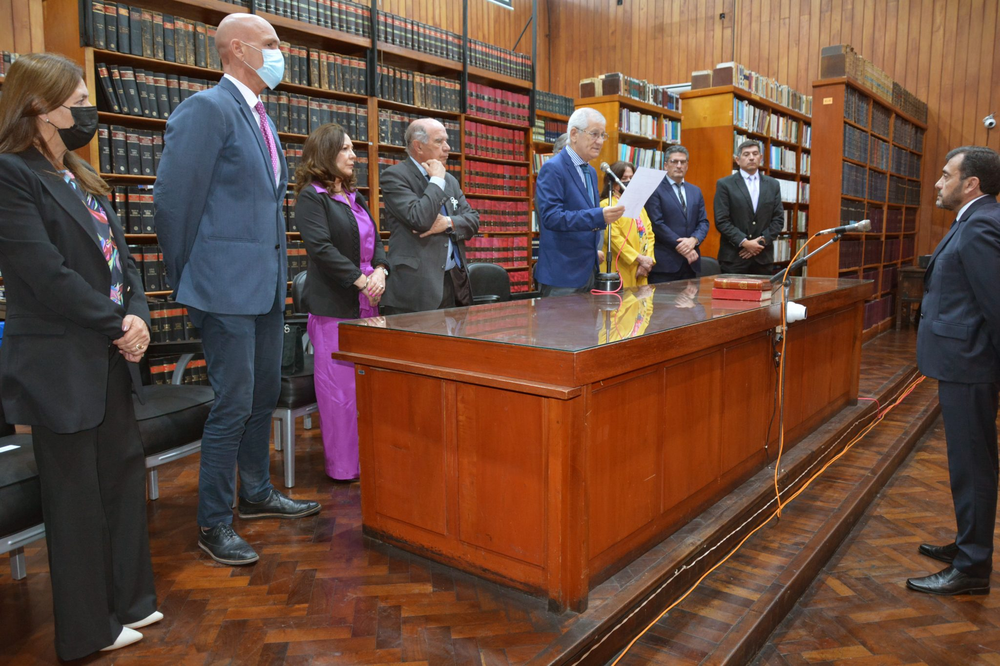

- 
Suprema Corte de Justicia
-
Juez Dr. Meyer Ekel
Presidente S.C.J.
-
Dr. Jenefes Sergio Marcelo
Juez Suplente
-
Dr. Del Campo José Manuel
-
Dra. Bernal María Silvia
-
Dra. Lamas Gonzalez Laura Nilda
-
Dr. Otaola Federico Francisco
-
Dra. Nieva María Eugenia
-
Dr. Llamas Martín Francisco
-
Dr. Miranda Mariano Gabriel
Jueces del S.C.J.